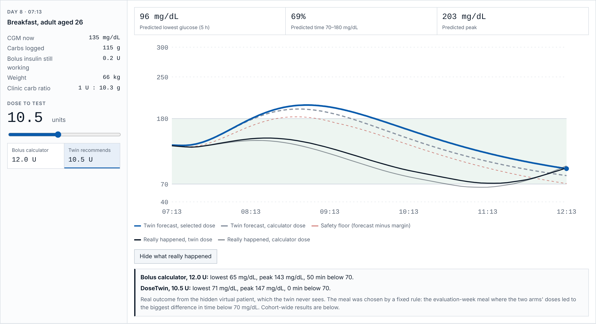

Drag the dose. The twin re-simulates the next 5 hours in the browser.
Here the calculator says 12 U; the twin says 10.5 U.
Real outcome: 50 min below 70 with 12 U, none with 10.5 U.
Example meal picked by a fixed, disclosed rule. Cohort results follow.